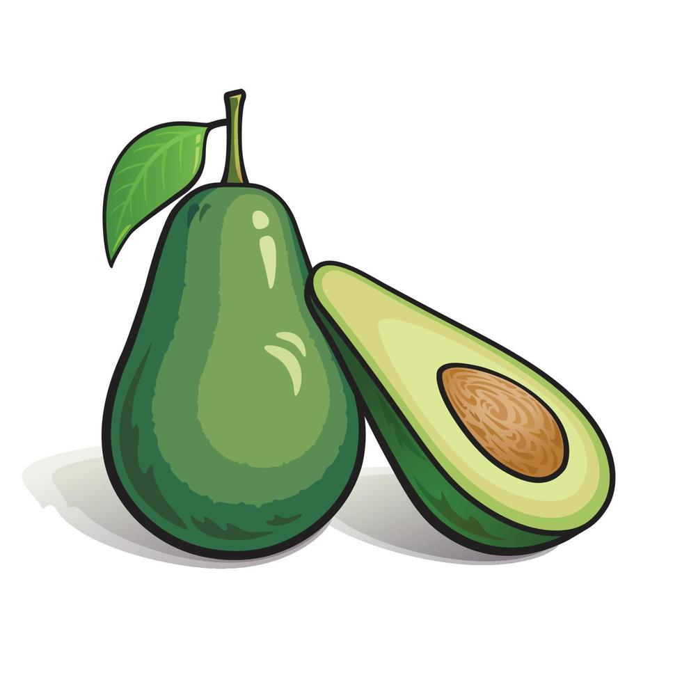

Rica em gorduras boas, fibras e antioxidantes. Ótima para o coração e pele. 
Oleaginosa cheia de gorduras boas e antioxidantes. Beneficia o coração e o cérebro.
Uma fruta amazônica rica em antioxidantes, especialmente antocianinas. Além de ser anti-inflamatório e antioxidante, o açaí tem uma combinação única de fibras e ácidos graxos essenciais que ajudam a combater o envelhecimento precoce.
Ajuda a controlar o colesterol e é fonte de energia saudável.
Grão sem glúten, rico em proteínas e fibras. Ajuda na digestão e mantém a energia.